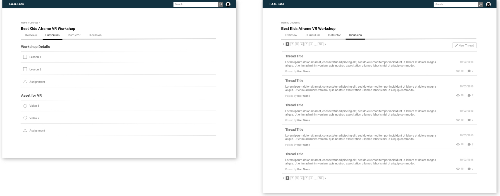
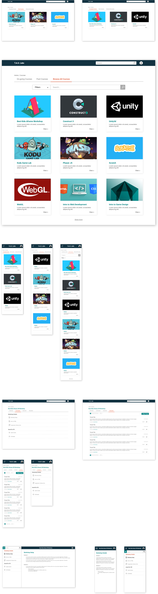

T.A.G. Labs Learning Management System
Overview
T.A.G. Labs is a non-profit organization based in Washington, DC, whose purpose is to help young people enhance their creative talents by developing computer games, mobile applications and websites. In 2018, T.A.G. started their online program, which called for the need of a learning management system (LMS). As a long-term collaborator with T.A.G., I helped the team create the design for this system.
My Role
Throughout this project, I worked closely with the T.A.G. Labs Web Design/Dev team. I was mainly responsible for conducting user research and creating wireframes as well as high-fidelity mockups for the design of the LMS.
The Process
Research
Knowing that our main users are students between the ages of 10 and 18, we developed personas accordingly so as to get a deeper insight into our target users’ needs. We also did various competitive analyses on similar online learning systems such as Codecademy, Lynda, Coursera, and Udemy. From these analyses, we were able to explore each systems’ strengths and shortcomings.
Through our research, we were able to identify certain pain points during the online learning experience. In an online environment without direct guidance from instructors, students sometimes need extra assistance in keeping on track with course progress. In addition, online learning tools are often overwhelmed with content from numerous courses, which calls for a coherent navigation flow.
Idea Development & Wireframing
With our findings, we eventually came up with the following main goals for the design of the LMS:
Make it easy to browse the LMS content, sign up, and keep up with course progress.
Display information in an orderly, comprehensible manner.
Create an engaging interface.
Bearing the goals in mind, I built a navigation system that guides the user smoothly through different parts within the LMS and provides a satisfying learning experience. On the home landing page, the user is presented with 3 tabs for on-going courses, completed courses, and all courses, which features a search tool for easier browsing. These tabs provide an organized way for the user to keep track of their courses while browsing other available options.

Each course’s landing page also includes 4 tabs, each of which displays one type of information about the program, so as not to overwhelm students with too many details. In the Curriculum tab, each lesson and its sections are displayed clearly. The sections’ different type of media like reading, assignment, or video are illustrated by different icons for easy recognition.
Along with the desktop wireframes, I also created a mobile version with similar navigation.

High-Fidelity Mockups
Using the wireframes, I started developing detailed mockups, adding and adjusting elements like accent colors, icons and text treatment to perfect the look and feel of the LMS.
